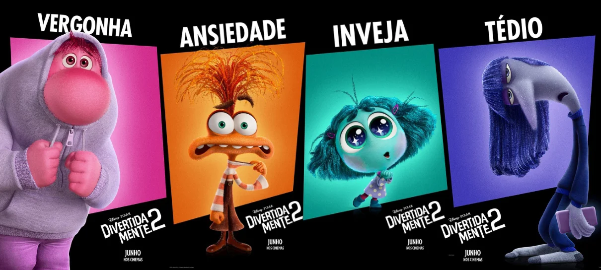

Em "Divertidamente", embarque numa jornada emocionante pelos pensamentos de Riley, uma garotinha cujas emoções - Alegria, Tristeza, Medo, Raiva e Nojinho - vivem uma aventura hilária e comovente para ajudá-la a enfrentar as mudanças da vida. Uma animação que vai te fazer rir, chorar e refletir sobre o que realmente importa nas nossas vidas.
